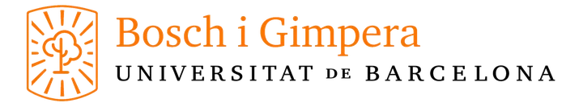

Unitat de Tècniques Augmentatives de Comunicació
Universitat de Barcelona

Fundació Bosch i Gimpera
UTAC Educació · Departament d’Educació i Formació Professional
UTAC Sírius · Departament de Drets Socials i Inclusió
Mira i Juga 2 · __VERSION__